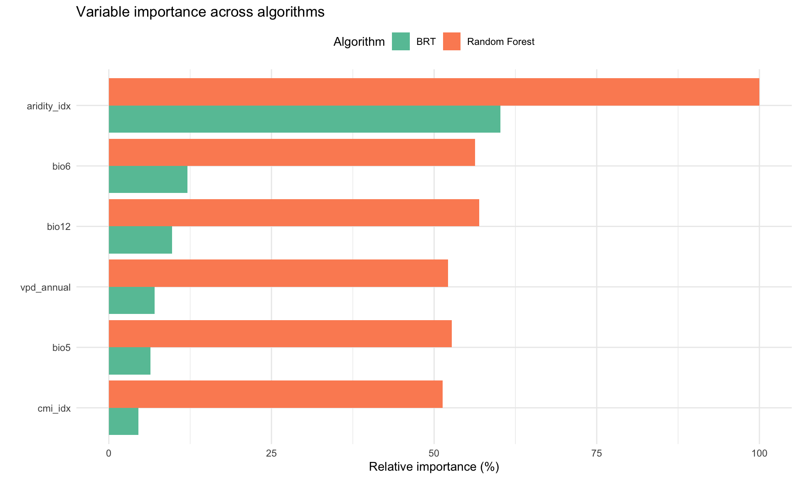
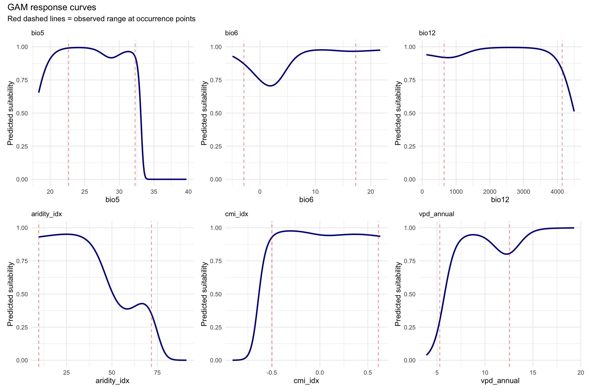
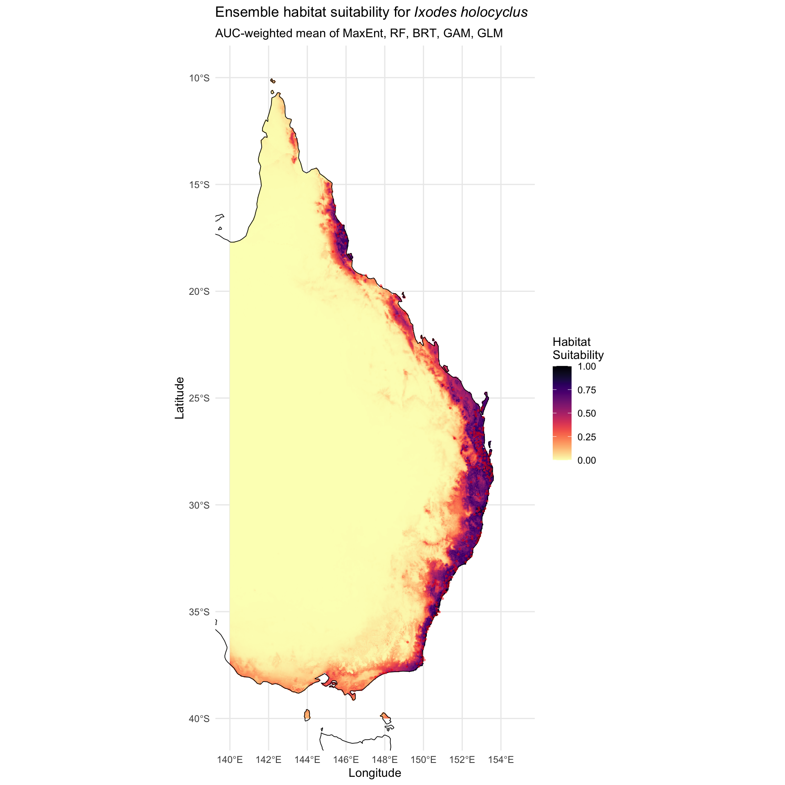
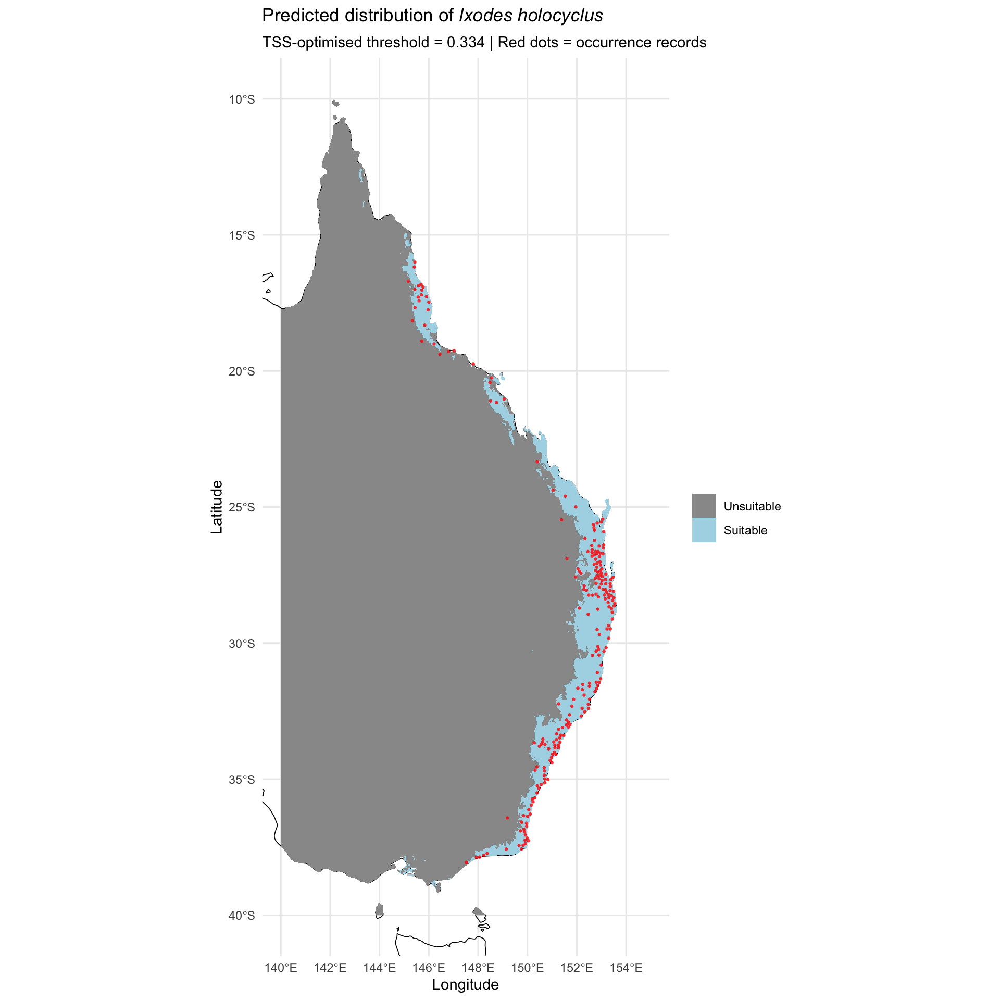
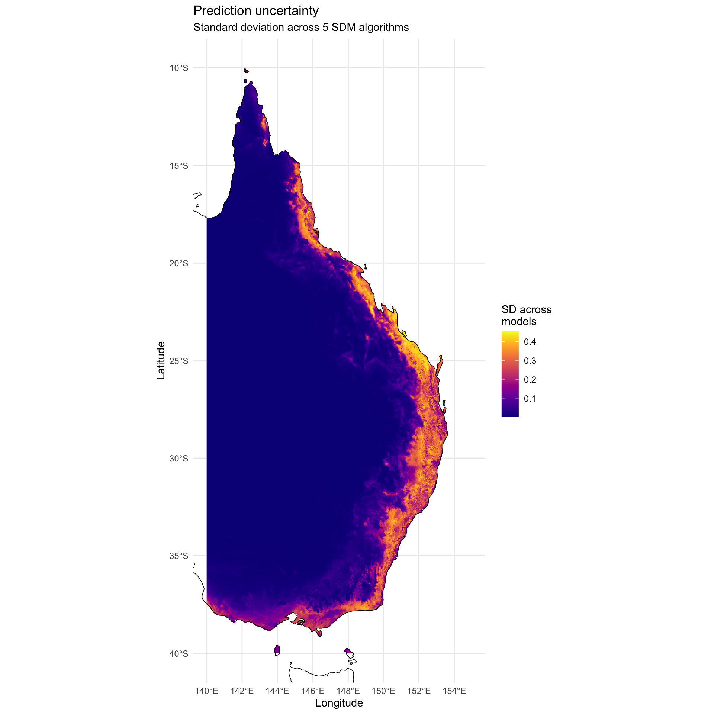
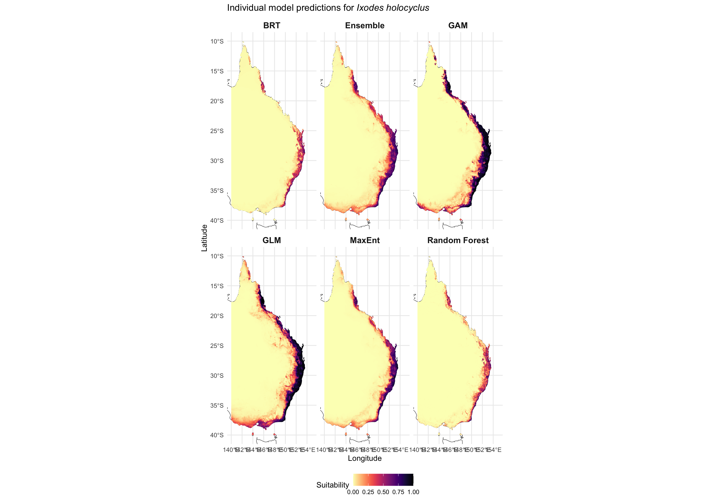

# --- Core spatial ---
library(terra)
library(sf)
library(rnaturalearth)
library(rnaturalearthdata)
# --- Data manipulation ---
library(tidyverse)
# --- SDM fitting ---
library(maxnet)
library(randomForest)
library(gbm)
library(dismo)
library(mgcv)
# --- SDM evaluation and tuning ---
library(blockCV)
library(ENMeval)
library(ecospat)
# --- Variable selection ---
library(corrplot)
# --- Spatial thinning ---
library(spThin)
# --- Visualisation ---
library(patchwork)
library(viridis)
# --- Set seed for reproducibility ---
set.seed(7990)
# --- Paths ---
base_dir <- "/Users/gof005/Library/CloudStorage/OneDrive-CSIRO/OneDrive - Docs/01_Projects/alpha_gal/02_SAP_2025-6/Ihol_SDM"
data_dir <- file.path(base_dir, "data")
processed_dir <- file.path(base_dir, "processed_data")
output_dir <- file.path(base_dir, "outputs")
figures_dir <- file.path(base_dir, "figures")
# --- Study area extent (Eastern Australia) ---
study_extent <- ext(140, 155, -40, -10)04 Full Model Fitting
1. Setup and Configuration
2. Load Outputs from Previous Scripts
# --- From 02_env_vars.qmd ---
env_model <- rast(file.path(output_dir, "env_layers", "env_model.tif"))
final_vars <- readRDS(file.path(output_dir, "env_layers", "final_vars.rds"))
# --- From 03_bg_points_model_fitting.qmd ---
bg_out_dir <- file.path(output_dir, "bg_model_inputs")
model_data <- readRDS(file.path(bg_out_dir, "model_data.rds"))
occ_thinned <- readRDS(file.path(bg_out_dir, "occ_thinned.rds"))
occ_vect <- vect(file.path(bg_out_dir, "occ_vect.gpkg"))
bg_vect <- vect(file.path(bg_out_dir, "bg_vect.gpkg"))
occ_env_vals <- readRDS(file.path(bg_out_dir, "occ_env_vals.rds"))
pred_cols <- readRDS(file.path(bg_out_dir, "pred_cols.rds"))
algorithms <- readRDS(file.path(bg_out_dir, "algorithms.rds"))
algo_names <- readRDS(file.path(bg_out_dir, "algo_names.rds"))
cv_summary <- read_csv(file.path(output_dir, "cv_performance_summary.csv"),
show_col_types = FALSE)
fns <- readRDS(file.path(bg_out_dir, "helper_functions.rds"))
calc_auc <- fns$calc_auc
calc_tss <- fns$calc_tss
calc_boyce <- fns$calc_boyce
# Australia boundary for maps
aus <- ne_countries(country = "Australia", scale = "medium", returnclass = "sf")
cat("env_model layers (", nlyr(env_model), "):", paste(final_vars, collapse = ", "), "\n")
cat("model_data:", nrow(model_data), "rows |",
sum(model_data$presence == 1), "presences +",
sum(model_data$presence == 0), "background\n")
cat("pred_cols:", paste(pred_cols, collapse = ", "), "\n")env_model layers ( 6 ): bio5, bio6, bio12, aridity_idx, cmi_idx, vpd_annual
model_data: 5713 rows | 224 presences + 5489 background
pred_cols: bio5, bio6, bio12, aridity_idx, cmi_idx, vpd_annual 8. Full Model Fitting (All Data)
Now we refit each algorithm on the complete dataset for final predictions.
all_x <- as.data.frame(model_data[, pred_cols])
all_y <- model_data$presence
full_models <- list()
# --- 1. MaxEnt ---
cat("Fitting MaxEnt on full data...\n")
full_models$maxent <- maxnet(p = all_y, data = all_x,
maxnet.formula(p = all_y, data = all_x,
classes = "lqh"))
# --- 2. Random Forest ---
cat("Fitting Random Forest on full data...\n")
rf_full_data <- cbind(presence = factor(all_y), all_x)
full_models$rf <- randomForest(presence ~ ., data = rf_full_data,
ntree = 1000,
mtry = floor(sqrt(length(pred_cols))),
importance = TRUE)
# --- 3. BRT ---
cat("Fitting BRT on full data...\n")
brt_full_data <- cbind(presence = all_y, all_x)
full_models$brt <- gbm.step(
data = brt_full_data,
gbm.x = which(names(brt_full_data) %in% pred_cols),
gbm.y = 1,
family = "bernoulli",
tree.complexity = 3,
learning.rate = 0.005,
bag.fraction = 0.75,
silent = TRUE,
plot.main = FALSE
)
# If BRT fails with these settings, try lower learning rate
if (is.null(full_models$brt)) {
full_models$brt <- gbm.step(
data = brt_full_data,
gbm.x = which(names(brt_full_data) %in% pred_cols),
gbm.y = 1,
family = "bernoulli",
tree.complexity = 2,
learning.rate = 0.001,
bag.fraction = 0.75,
silent = TRUE,
plot.main = FALSE
)
}
# --- 4. GAM ---
cat("Fitting GAM on full data...\n")
gam_full_data <- cbind(presence = all_y, all_x)
# Upweight presences to equal background sample size (corrects prevalence bias)
n_pres <- sum(all_y == 1); n_bg <- sum(all_y == 0)
case_wts <- ifelse(all_y == 1, n_bg / n_pres, 1)
smooth_terms <- paste0("s(", pred_cols, ", k = 5)")
gam_formula <- as.formula(
paste("presence ~", paste(smooth_terms, collapse = " + "))
)
full_models$gam <- gam(gam_formula, data = gam_full_data,
family = binomial(link = "logit"),
weights = case_wts,
method = "REML")
# --- 5. GLM ---
cat("Fitting GLM on full data...\n")
glm_full_data <- cbind(presence = all_y, all_x)
temp_vars <- pred_cols[grepl("bio5|bio6", pred_cols)]
other_vars <- setdiff(pred_cols, temp_vars)
glm_terms <- c(other_vars, paste0("poly(", temp_vars, ", 2)"))
glm_formula <- as.formula(
paste("presence ~", paste(glm_terms, collapse = " + "))
)
full_models$glm <- glm(glm_formula, data = glm_full_data,
family = binomial(link = "logit"),
weights = case_wts)
cat("All models fitted successfully.\n")Fitting MaxEnt on full data...
Fitting Random Forest on full data...
Fitting BRT on full data...
Fitting GAM on full data...
Fitting GLM on full data...
All models fitted successfully.8.1 Variable Importance
# MaxEnt variable importance (from model coefficients)
# Use permutation-based importance where available
# Random Forest importance
rf_imp <- importance(full_models$rf, type = 2)
rf_imp_df <- data.frame(
Variable = rownames(rf_imp),
Importance = rf_imp[, 1],
Algorithm = "Random Forest"
)
rf_imp_df$Importance <- rf_imp_df$Importance / max(rf_imp_df$Importance) * 100
# BRT importance
if (!is.null(full_models$brt)) {
brt_imp <- summary(full_models$brt, plotit = FALSE)
brt_imp_df <- data.frame(
Variable = brt_imp$var,
Importance = brt_imp$rel.inf,
Algorithm = "BRT"
)
}
# Combine
var_imp_all <- bind_rows(rf_imp_df, brt_imp_df)
p_varimp <- ggplot(var_imp_all, aes(x = reorder(Variable, Importance),
y = Importance, fill = Algorithm)) +
geom_col(position = "dodge") +
coord_flip() +
labs(title = "Variable importance across algorithms",
x = "", y = "Relative importance (%)") +
scale_fill_brewer(palette = "Set2") +
theme_minimal() +
theme(legend.position = "top")
print(p_varimp)
ggsave(file.path(figures_dir, "02_variable_importance.png"), p_varimp,
width = 10, height = 6, dpi = 300)8.2 Response Curves
# Generate response curves from GAM (smoothest, most interpretable)
# For each variable, predict across its range while holding others at
# the median of occurrence points (not the full dataset, which is dominated
# by background in unsuitable areas)
occ_x <- all_x[all_y == 1, ]
occ_medians <- apply(occ_x, 2, median, na.rm = TRUE)
response_plots <- list()
for (var in pred_cols) {
# Create prediction data: vary focal variable, hold others at occurrence median
var_range <- seq(
min(all_x[[var]], na.rm = TRUE),
max(all_x[[var]], na.rm = TRUE),
length.out = 200
)
pred_data <- as.data.frame(
matrix(rep(occ_medians, each = 200),
nrow = 200, dimnames = list(NULL, pred_cols))
)
pred_data[[var]] <- var_range
# Predict from GAM
gam_response <- predict(full_models$gam, pred_data, type = "response")
response_df <- data.frame(x = var_range, y = gam_response)
# Mark the observed range at occurrence points
occ_subset <- occ_env_vals[occ_env_vals[["presence"]] == 1, ]
occ_range <- range(occ_subset[[var]], na.rm = TRUE)
response_plots[[var]] <- ggplot(response_df, aes(x = x, y = y)) +
geom_line(colour = "darkblue", linewidth = 1) +
geom_vline(xintercept = occ_range, linetype = "dashed", colour = "red",
alpha = 0.5) +
labs(title = var, x = var, y = "Predicted suitability") +
ylim(0, 1) +
theme_minimal() +
theme(plot.title = element_text(size = 10))
}
p_response <- wrap_plots(response_plots, ncol = 3) +
plot_annotation(
title = "GAM response curves",
subtitle = "Red dashed lines = observed range at occurrence points"
)
print(p_response)
ggsave(file.path(figures_dir, "03_response_curves.png"), p_response,
width = 12, height = 8, dpi = 300)9. Ensemble Prediction
# Predict habitat suitability from each model across the study area
# We extract all raster values as a data frame, predict in R, then write back
# to raster. This avoids compatibility issues with terra::predict() for
# different model types.
cat("Extracting raster values for prediction...\n")
# Get all cell values as a data frame
env_df <- as.data.frame(env_model, xy = TRUE, cells = TRUE, na.rm = TRUE)
pred_df <- env_df[, final_vars] # Just the predictor columns
# Helper: write a vector of predictions back into a raster template
fill_raster <- function(template, cells, vals, name) {
r <- init(template[[1]], fun = NA)
v <- as.matrix(values(r))
v[cells, 1] <- as.numeric(vals)
values(r) <- v
names(r) <- name
r
}
# --- MaxEnt ---
cat(" Predicting MaxEnt...\n")
me_pred_vals <- predict(full_models$maxent, pred_df, type = "cloglog")
pred_maxent <- fill_raster(env_model, env_df$cell, me_pred_vals, "maxent")
# --- Random Forest ---
cat(" Predicting Random Forest...\n")
rf_pred_vals <- predict(full_models$rf, pred_df, type = "prob")[, "1"]
pred_rf <- fill_raster(env_model, env_df$cell, rf_pred_vals, "rf")
# --- BRT ---
cat(" Predicting BRT...\n")
if (!is.null(full_models$brt)) {
brt_pred_vals <- predict(full_models$brt, pred_df,
n.trees = full_models$brt$gbm.call$best.trees,
type = "response")
pred_brt <- fill_raster(env_model, env_df$cell, brt_pred_vals, "brt")
} else {
cat(" WARNING: BRT model was NULL; using placeholder\n")
pred_brt <- NULL
}
# --- GAM ---
cat(" Predicting GAM...\n")
gam_pred_vals <- predict(full_models$gam, pred_df, type = "response")
pred_gam <- fill_raster(env_model, env_df$cell, gam_pred_vals, "gam")
# --- GLM ---
cat(" Predicting GLM...\n")
glm_pred_vals <- predict(full_models$glm, pred_df, type = "response")
pred_glm <- fill_raster(env_model, env_df$cell, glm_pred_vals, "glm")
cat("Individual model predictions generated.\n")Extracting raster values for prediction...
Predicting MaxEnt...
Predicting Random Forest...
Predicting BRT...
Predicting GAM...
Predicting GLM...
Individual model predictions generated.9.1 AUC-Weighted Ensemble
# Calculate AUC-based weights from cross-validation
weights <- cv_summary$AUC_mean
names(weights) <- algorithms
# Normalise weights to sum to 1
weights <- weights / sum(weights, na.rm = TRUE)
# Handle any NAs (set weight to 0)
weights[is.na(weights)] <- 0
cat("Ensemble weights (proportional to CV AUC):\n")
for (i in seq_along(algo_names)) {
cat(sprintf(" %s: %.3f (AUC = %.3f)\n",
algo_names[i], weights[i], cv_summary$AUC_mean[i]))
}
# Build list of available predictions and corresponding weights
pred_list <- list(maxent = pred_maxent, rf = pred_rf, gam = pred_gam, glm = pred_glm)
weight_list <- weights[c("maxent", "rf", "gam", "glm")]
if (!is.null(pred_brt)) {
pred_list$brt <- pred_brt
weight_list <- c(weight_list, weights["brt"])
}
# Renormalise weights to available models
weight_list <- weight_list / sum(weight_list, na.rm = TRUE)
# Compute weighted ensemble
ensemble_mean <- pred_list[[1]] * 0 # Initialise to zero raster
for (nm in names(pred_list)) {
ensemble_mean <- ensemble_mean + pred_list[[nm]] * weight_list[nm]
}
names(ensemble_mean) <- "ensemble_suitability"
# Prediction uncertainty (SD across models)
pred_stack <- rast(pred_list)
ensemble_sd <- app(pred_stack, fun = "sd", na.rm = TRUE)
names(ensemble_sd) <- "ensemble_uncertainty"
cat("Ensemble prediction generated.\n")
cat("Suitability range:", round(global(ensemble_mean, "min", na.rm = TRUE)[[1]], 3),
"to", round(global(ensemble_mean, "max", na.rm = TRUE)[[1]], 3), "\n")Ensemble weights (proportional to CV AUC):
MaxEnt: 0.201 (AUC = 0.968)
Random Forest: 0.200 (AUC = 0.964)
BRT: 0.199 (AUC = 0.962)
GAM: 0.200 (AUC = 0.967)
GLM: 0.200 (AUC = 0.966)
Ensemble prediction generated.
Suitability range: 0 to 0.946 9.2 Binary Threshold Map
# Find the threshold that maximises TSS on the full training data
full_pred_at_points <- terra::extract(ensemble_mean, occ_vect)$ensemble_suitability
full_pred_at_bg <- terra::extract(ensemble_mean, bg_vect)$ensemble_suitability
full_preds <- c(full_pred_at_points, full_pred_at_bg)
full_obs <- c(rep(1, length(full_pred_at_points)), rep(0, length(full_pred_at_bg)))
# Remove NAs
valid <- complete.cases(full_preds, full_obs)
tss_result <- calc_tss(full_obs[valid], full_preds[valid])
cat("Optimal TSS threshold:", round(tss_result$threshold, 3), "\n")
cat("TSS at threshold:", round(tss_result$tss, 3), "\n")
# Create binary map
ensemble_binary <- ensemble_mean >= tss_result$threshold
names(ensemble_binary) <- "predicted_presence"
# Calculate area of suitable habitat
# cellSize with unit="km" returns area in km²
cell_areas <- cellSize(ensemble_binary, unit = "km")
suitable_area <- global(ensemble_binary * cell_areas, "sum", na.rm = TRUE)[[1]]
cat("Predicted suitable area:", format(round(suitable_area), big.mark = ","), "km²\n")Optimal TSS threshold: 0.334
TSS at threshold: 0.915
Predicted suitable area: 194,211 km²10. Visualisation and Output
10.1 Ensemble Suitability Map
# Convert rasters to data frames for ggplot
ensemble_df <- as.data.frame(ensemble_mean, xy = TRUE, na.rm = TRUE)
names(ensemble_df) <- c("x", "y", "suitability")
p_ensemble <- ggplot() +
geom_raster(data = ensemble_df, aes(x = x, y = y, fill = suitability)) +
geom_sf(data = aus, fill = NA, colour = "black", linewidth = 0.3) +
geom_point(data = occ_thinned, aes(x = lon, y = lat),
colour = "red", size = 0.8, alpha = 0.5, shape = 16) +
scale_fill_viridis(option = "magma", direction = -1,
name = "Habitat\nSuitability",
limits = c(0, 1)) +
coord_sf(xlim = c(140, 155), ylim = c(-40, -10)) +
labs(
title = expression("Ensemble habitat suitability for" ~ italic("Ixodes holocyclus")),
subtitle = "AUC-weighted mean of MaxEnt, RF, BRT, GAM, GLM",
x = "Longitude", y = "Latitude"
) +
theme_minimal() +
theme(legend.position = "right")
print(p_ensemble)
ggsave(file.path(figures_dir, "04_ensemble_suitability.png"), p_ensemble,
width = 10, height = 10, dpi = 300)10.2 Binary Presence Map
binary_df <- as.data.frame(ensemble_binary, xy = TRUE, na.rm = TRUE)
names(binary_df) <- c("x", "y", "presence")
binary_df$presence <- factor(as.integer(binary_df$presence),
levels = c(0L, 1L),
labels = c("Unsuitable", "Suitable"))
p_binary <- ggplot() +
geom_sf(data = aus, fill = NA, colour = "black", linewidth = 0.3) +
geom_raster(data = binary_df,
aes(x = x, y = y, fill = presence)) +
geom_point(data = occ_thinned, aes(x = lon, y = lat),
colour = "red", size = 0.8, alpha = 0.8, shape = 16) +
scale_fill_manual(values = c("Unsuitable" = "grey60", "Suitable" = "lightblue"),
name = "") +
coord_sf(xlim = c(140, 155), ylim = c(-40, -10)) +
labs(
title = expression("Predicted distribution of" ~ italic("Ixodes holocyclus")),
subtitle = paste0("TSS-optimised threshold = ", round(tss_result$threshold, 3),
" | Red dots = occurrence records"),
x = "Longitude", y = "Latitude"
) +
theme_minimal() +
theme(legend.position = "right")
print(p_binary)
ggsave(file.path(figures_dir, "05_binary_distribution.png"), p_binary,
width = 10, height = 10, dpi = 300)10.3 Prediction Uncertainty Map
uncert_df <- as.data.frame(ensemble_sd, xy = TRUE, na.rm = TRUE)
names(uncert_df) <- c("x", "y", "uncertainty")
p_uncert <- ggplot() +
geom_raster(data = uncert_df,
aes(x = x, y = y, fill = uncertainty)) +
geom_sf(data = aus, fill = NA, colour = "black", linewidth = 0.3) +
scale_fill_viridis(option = "plasma", name = "SD across\nmodels") +
coord_sf(xlim = c(140, 155), ylim = c(-40, -10)) +
labs(
title = "Prediction uncertainty",
subtitle = "Standard deviation across 5 SDM algorithms",
x = "Longitude", y = "Latitude"
) +
theme_minimal() +
theme(legend.position = "right")
print(p_uncert)
ggsave(file.path(figures_dir, "06_prediction_uncertainty.png"), p_uncert,
width = 10, height = 10, dpi = 300)10.4 Individual Model Comparison
# Convert each model prediction to data frame
make_pred_df <- function(rast, name) {
df <- as.data.frame(rast, xy = TRUE, na.rm = TRUE)
names(df) <- c("x", "y", "suitability")
df$model <- name
return(df)
}
pred_dfs <- list(
make_pred_df(pred_maxent, "MaxEnt"),
make_pred_df(pred_rf, "Random Forest"),
make_pred_df(pred_gam, "GAM"),
make_pred_df(pred_glm, "GLM"),
make_pred_df(ensemble_mean, "Ensemble")
)
if (!is.null(pred_brt)) {
pred_dfs <- c(pred_dfs, list(make_pred_df(pred_brt, "BRT")))
}
all_pred_df <- bind_rows(pred_dfs)
p_compare <- ggplot() +
geom_sf(data = aus, fill = "white", colour = "black", linewidth = 0.2) +
geom_raster(data = all_pred_df,
aes(x = x, y = y, fill = suitability)) +
scale_fill_viridis(option = "magma", direction = -1,
name = "Suitability", limits = c(0, 1)) +
coord_sf(xlim = c(140, 155), ylim = c(-40, -10)) +
facet_wrap(~model, ncol = 3) +
labs(
title = expression("Individual model predictions for" ~ italic("Ixodes holocyclus")),
x = "Longitude", y = "Latitude"
) +
theme_minimal() +
theme(legend.position = "bottom",
strip.text = element_text(size = 12, face = "bold"))
print(p_compare)
ggsave(file.path(figures_dir, "07_model_comparison.png"), p_compare,
width = 14, height = 10, dpi = 300)10.5 Save GeoTIFF Outputs
sdm_output_dir <- file.path(output_dir, "sdm_results")
dir.create(sdm_output_dir, showWarnings = FALSE, recursive = TRUE)
# Save ensemble outputs
writeRaster(ensemble_mean,
file.path(sdm_output_dir, "ensemble_suitability.tif"),
overwrite = TRUE)
writeRaster(ensemble_sd,
file.path(sdm_output_dir, "ensemble_uncertainty.tif"),
overwrite = TRUE)
writeRaster(ensemble_binary,
file.path(sdm_output_dir, "ensemble_binary.tif"),
overwrite = TRUE)
# Save individual model predictions
writeRaster(pred_maxent,
file.path(sdm_output_dir, "pred_maxent.tif"),
overwrite = TRUE)
writeRaster(pred_rf,
file.path(sdm_output_dir, "pred_rf.tif"),
overwrite = TRUE)
if (!is.null(pred_brt)) {
writeRaster(pred_brt,
file.path(sdm_output_dir, "pred_brt.tif"),
overwrite = TRUE)
}
writeRaster(pred_gam,
file.path(sdm_output_dir, "pred_gam.tif"),
overwrite = TRUE)
writeRaster(pred_glm,
file.path(sdm_output_dir, "pred_glm.tif"),
overwrite = TRUE)
# Save non-raster objects needed by 05_validation.qmd
saveRDS(weights, file.path(sdm_output_dir, "ensemble_weights.rds"))
saveRDS(tss_result, file.path(sdm_output_dir, "tss_result.rds"))
cat("All outputs saved to:", sdm_output_dir, "\n")All outputs saved to: /Users/gof005/Library/CloudStorage/OneDrive-CSIRO/OneDrive - Docs/01_Projects/alpha_gal/02_SAP_2025-6/Ihol_SDM/outputs/sdm_results